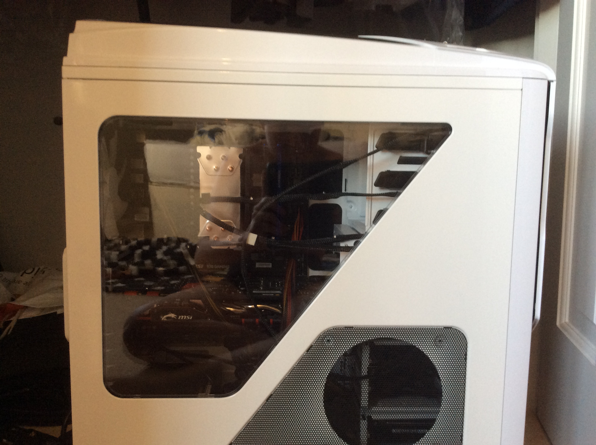
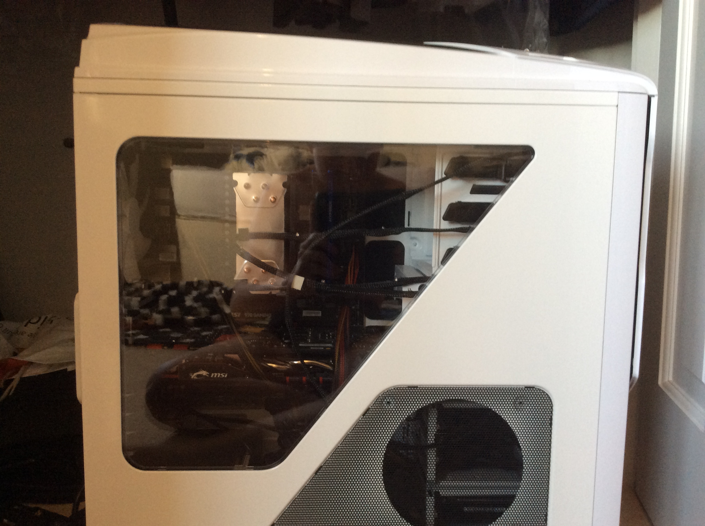

Computer Building 1
I decided to build a computer in the summer of 2015
Up until then I had been using my not very fast MacBook to play games on, it was extremely laggy and the laptop got very hot. Also, video games are massive - they take up loads of space and this was causing some of my coding projects to not fit on the computer!
It would run Windows 8.1 - 10 wasn’t out yet, and it would be quite cheap as I didn’t have much money, luckily my dad offered to help with the money as a birthday gift.
The specifications are the following -
CPU - AMD FX8350
Graphics Card - MSI Nvidia Geforce GTX 970
Motherboard - MSI 970 Gaming
RAM - Kingston HyperX 2x4 GB DDR3 Blue
CPU Cooler - Hyper 212 Evo
HDD - WD 1TB Hard Drive
PSU - EVGA 500B
Case - NZXT Phantom 530 White
And some blue lights.
 

I installed the PSU first, then put the CPU and RAM into the motherboard. I then installed the CPU cooler (a pain in the bum!) and mounted the motherboard into the case. I then installed the HDD and plugged it into the Motherboard. Finally I installed the GPU, which was terrifying as it is literally held in by one screw and then I wired everything together!
My brother became jealous as he had nowhere to play his games, Lego Worlds and Star Wars Battlefront, as they were quite demanding games, and my old laptop, which I still use! (actually it is what I am making this website on!), wasn’t up to it.
So as a birthday present for my brother - Our birthday’s are quite close, my Dad purchased the exact parts of my computer, other than a different PSU and red lights and I built that for my brother which he loves.
I think the best all round component of the build was the Hyper 212 Evo CPU cooler. I have used it in every PC Build I have ever done and it is great.
I think it would have been better to get and Intel processor as AMD aren’t that good compared to the speed of Skylake and now Kabylake Intel processors.
Overall, I learnt I lot from building these two computers. I learnt how to install a CPU a GPU and a CPU Cooler. I learnt a lot about cabling in PCs as well!